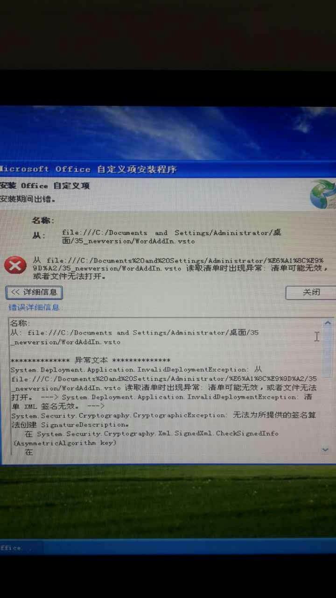
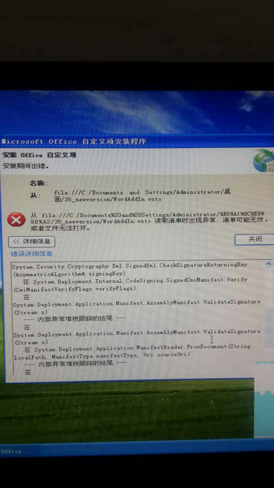

几个月之前接了个项目，是关于office插件的，在用VS自带的onceclick发布安装程序时出现了问题。发布的安装程序在Win7、Win8上都能正常安装，但在XP系统出现了问题，错误日志如下：


主要错误是 System.Deployment.Application.InvalidDeploymentException 和 System.Security.Crytography.CryptographicException，当时研究了好半天，最后发现是工程的.net framework版本出了问题（汗），需要把工程的framework的版本从4.5改成4.0，而且也修改了签名算法，改了之后一切OK，在XP系统上也可以正常安装了~